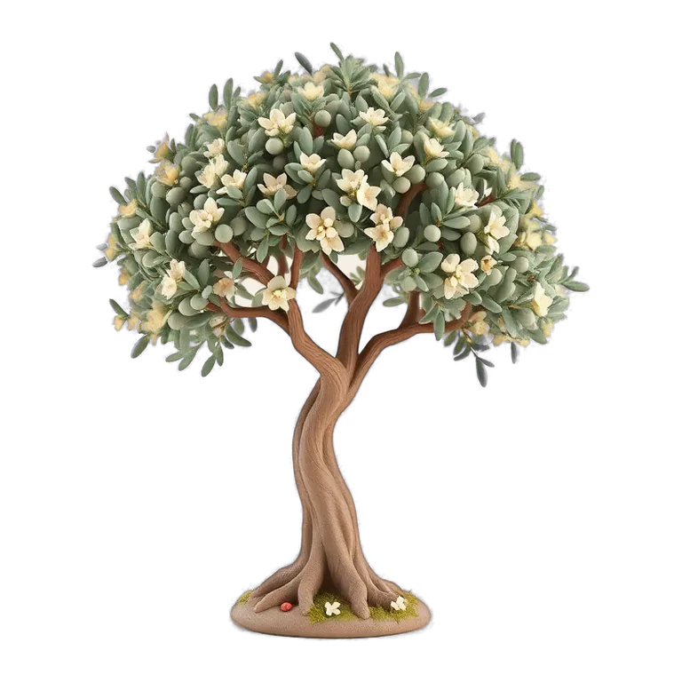

BOOKS
김동석 목사 저서
 출간 · 판매 중
구매하러 가기 →
출간 · 판매 중
구매하러 가기 →
JESUS CHRIST IN LEVITICUS
레위기에서 만난
예수그리스도
그림자에서 실체로, 평신도를 위한 레위기 강해
드디어 출간되었습니다.

내가 가꾸는 믿음의 정원
다음 예배
우리들 소식
말씀 안에서 자라는 아이들
나의 신앙 여정
오늘의 묵상과 필사, 나의 신앙 기록
목회자 · 관리자
설교와 예배, 심방과 교육
SINCE 1964
공지를 불러오는 중…
소식을 불러오는 중…
우리 어린이들이 QT와 필사로 말씀 안에서 자라가는 기록입니다.
성장 기록을 불러오는 중…
묵상하다가 궁금한 용어나 뜻이 있으면 ‘운평 말씀지기’에게 물어보십시오.
김동석 목사님의 가르침을 학습한 AI가 답합니다.
참고: 위급하거나 중요한 일은 목사님께 직접 전화하십시오(010-4032-2903). ‘운평 말씀지기’는 목사님이 아니라 AI 도우미입니다.
출간 · 판매 중
구매하러 가기 →
JESUS CHRIST IN LEVITICUS
그림자에서 실체로, 평신도를 위한 레위기 강해
드디어 출간되었습니다.
처음 온 사람이 말씀을 만나고, 공동체 안에서 자라고, 세상으로 나아갑니다.
밖에서 안으로, 그리고 다시 밖으로 — 그 여정의 어디쯤에 계신가요?
예배 시간, 오시는 길, 새가족 등록을 안내합니다.
둘러보기 → 02주일 설교, 교리 공부, 매일 묵상을 읽고 들을 수 있습니다.
말씀 보기 → 03성도들의 삶과 간증을 담은 이야기를 읽을 수 있습니다.
이야기 → 04기도 요청, 간증, 일상 이야기를 글로 올리고 함께 읽습니다.
나누러 가기 → 05이번 주 기도 제목을 보고 함께 기도합니다.
기도하기 → 06교회가 지역과 열방을 섬기는 이야기를 읽을 수 있습니다.
섬김 보기 → 07새가족반, 양육반, 제자훈련 교육 자료를 내려받습니다. 로그인한 교인만 쓸 수 있습니다.
자료 보기 → 08연말정산용 기부금 영수증을 온라인으로 신청하십시오.
신청하기 →